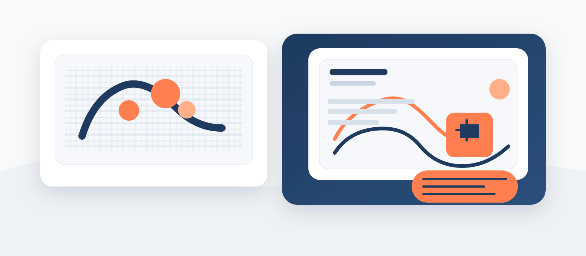

Embedded from YouTube. Turn on captions in the video player when available. You can also download the captions or read the full transcript below.
About this story
The video focuses on innovation as a practical response to real needs, especially water, energy, and systems that are dependable in everyday life.
The structure moves from wide context to close detail so the audience can absorb the idea without losing the human scale behind the work.
Transcript
Read the companion transcript
The transcript mirrors the video structure and makes it easier to search, quote, or translate.
-
Innovation rarely arrives all at once. It grows in shared rooms, in labs, in workshops, and in conversations between people who trust one another enough to test an idea.
-
We started with one question: how do we make the tool work when connectivity is unstable and the screen is small?
-
The answer was not just a technical decision. It was a design choice: simplify the path, lower the barriers, and let the user keep moving.
-
If the interface asks too much of the audience, it is asking the wrong questions. We want the tool to feel like support, not like homework.
-
Around the room, prototypes shift from laptops to phones and back again. The team tests contrast, captions, and the speed of each interaction.
-
Access is not the final layer. It is part of how the story gets told in the first place.
-
That mindset turns innovation into something shareable, understandable, and far more human.
Related stories
Continue exploring

Voices of Kigali
Listen to the city through a reflective morning soundscape.

The Artisan's Journey
Meet a craft practice shaped by memory, material, and care.
How access works
Read the StoryCast accessibility features and engagement model.